Skullgirls Mobile es un juego de lucha RPG en 2D repleto de personajes únicos y coloridos que podrás coleccionar, mejorar y personalizar.
Contando con un total de 18 personajes jugables, 2 personajes asistentes y más de 100 variantes en total. Es un juego que tiene una buena cantidad de contenido, con una gran variedad de modos de juego y que se vuelve bastante enganchante.
Skullgirls Mobile más que ser una versión para celulares de su versión 2nd Encore, es más como un juego totalmente diferente, ya que tiene muchas mecánicas y cualidades que lo diferencian bastante de su contraparte de sobremesa y PC.
Algunas de las notables diferencias son su interfaz, modos de juego, variantes y su más reciente mecánica añadida, las estrellas invitadas. Todo este gran conjunto de contenido hace que sea un excelente juego de peleas para celular, que con el paso de los años a estado manteniendo viva a su pequeña pero bastante fiel comunidad, a tal punto de que gracias a la versión de celulares es que muchos conocieran la franquicia y se animaran a probar la versión de 2nd Encore.
Skullgirls Mobile tiene una jugabilidad bastante singular, usa controles táctiles para mover a los personajes deslizando el dedo por la pantalla, presionar con ambos dedos hará que el personaje bloquee, deslizar con ambos dedos hará que los personajes usen un agarre, los personajes tienen un combo básico de 5 golpes o más al tocar rápidamente la pantalla, deslizando hacia arriba darán un golpe que lanzará al rival por los aires, esto se puede seguir con un combo aéreo que se ejecuta tocando la pantalla, si se desliza hacia abajo se realizará un golpe que derribe al oponente. Si se pulsa la pantalla con un solo dedo, se prepara un golpe cargado. En el juego suelen abundar las batallas por equipos de 3 contra 3, solo en el modo historia y brechas es donde se suelen ver nodos de 1 contra 1 o 2 contra 2, aún así sera importante armar un buen equipo de personajes para hacer frente a los equipos enemigos de defensa de PP, Brechas y Reinos Paralelos, incluyendo los modificadores de batalla.
Vídeo Gameplay
A diferencia de la versión de consolas y PC, aquí existen efectos positivos y negativos, algunos son:
Efectos positivos
| Efecto | Nombre | Funcion |
|---|---|---|
| Armadura | Reduce un 20% el daño recibido, al activarse elimina el efecto de rompearmadura, se puede acumular 5 unidades. | |
| Barrera | Absorbe un 10% de daño según la vida total de su portador, se puede acumular 5 unidades. | |
| Prisa | Aumenta la cantidad de medidor de Blockbuster obtenido. | |
| 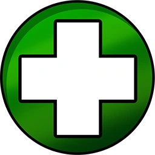 | Regeneración | Regenera un 1% de salud por segundo, se puede acumular 5 unidades. |
| Regeneración intensa | Regenera un 2% de salud por segundo. | |
| 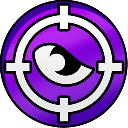 | Infalible | Ignora la defensa, las espinas, el inquebrantable, el autobloqueo y la evasión del oponente. (No ignora la armadura) |
| 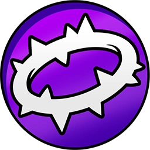 | Espinas | Refleja un 20% del daño recibido, se puede acumular hasta 5 unidades. |
| 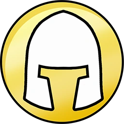 | Inquebrantable | Ignora el impacto de los golpes recibidos, más no el daño. |
| Precisión | Garantiza un golpe crítico e impide la activación de habilidades estrella, se puede acumular 5 unidades. | |
 |
Rabia | Aumenta tu daño un 20%, se puede acumular 5 unidades. |
| Último estertor | Impide que el portador muera. | |
| Inmunidad | Impide recibir efectos negativos. |
Efectos negativos
| Efecto | Nombre | Funcion |
|---|---|---|
| 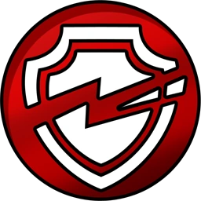 | Rompearmadura | Aumenta un 20% el daño recibido, al activarse elimina el efecto de armadura. |
| 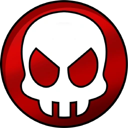 | Ruina | Al acabarse el efecto, matará a quien lo sufra. |
| Sangrado | Quita un 1% de vida por segundo, se puede acumular 5 unidades. | |
| 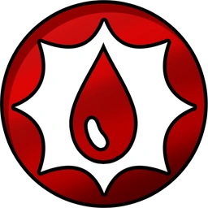 | Sangrado intenso | Quita un 2% de salud por segundo. |
| Bloqueo de Blockbuster | Deshabilita los Blockbusters | |
| Bloqueo de movimientos especiales | Deshabilita los movimientos especiales. | |
| Bloqueo de relevos | Deshabilita los relevos. | |
| 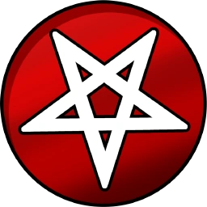 | Maleficio | Impide obtener efectos positivos. |
| Maldición | Deshabilita las habilidades estrella. | |
| 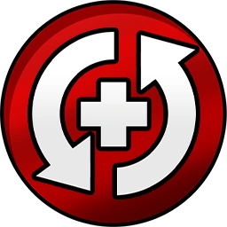 | Polaridad inversa | Invierte la regeneración. |
 |
Aturdir | Previene todas las acciones hasta que termine el efecto. |
| 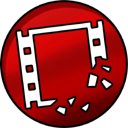 | Marchitar | Reduce un 5% medidor de Blockbuster por segundo, se puede acumular 5 unidades. |
| 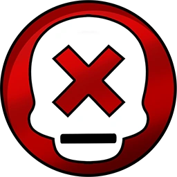 | Marca mortal | Aumenta el daño recibido al bloquear y aumenta el daño crítico recibido en un 50%. |